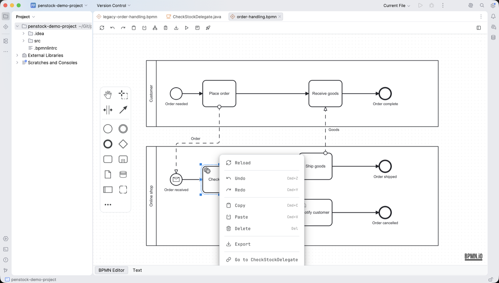

Guide / Editors
Editing a diagram
How to draw, move, connect, copy and undo on the canvas.
Add an element
- Drag an element from the palette at the left edge of the canvas and drop it where you want it.
- Type to give it a name. Double-click the element to rename it later.
- To connect it to another element, select the first one and drag from the arrow icon of the small pad beside it onto the second.
Or let Penstock add the next element for you: select an element and use the pad beside it. The pad appends the element you choose, already connected. Its Create element catalogue lists every element by what it is for. See BPMN elements.
Change an element into another
- Select the element.
- Press the wrench on its pad.
- Pick what it should become. A task can become a service task, a start event a message start event, an exclusive gateway a parallel one.
The name, the connections and the properties that still apply are kept.
The tools at the top of the palette
| Tool | What it does |
|---|---|
| Hand | Moves the canvas without selecting anything. |
| Lasso | Selects everything inside a rectangle you drag. |
| Space | Makes room. Drag a line across the diagram and everything past it moves. |
| Global connect | Draws a connection starting from any element. |
Undo and redo
Undo and Redo are the first two buttons on the toolbar. They step through every change in the order you made it. While a token simulation runs they are switched off, so a preview cannot change your file.
Copy and paste
Copy and paste use the clipboard of your system or tool, not a clipboard private to one diagram. So you can copy a pool from one diagram and paste it into another open diagram. Copy and Paste are in the More menu. Pasting from the toolbar has no mouse position, so the elements land in the middle of the view.
Copy as image, in the More menu and the context menu of the canvas, puts the selection, or the whole diagram when nothing is selected, on the clipboard as a PNG.
The minimap
Open More and choose Minimap. A small overview of the whole diagram appears. It helps on large diagrams.
Right-click
The context menu of an element holds the editing actions and, when they apply, an entry that goes to the code that runs the element, and the Pro actions that link to your code. See Code links.
Go to the class of a task
A task can name a Java class: a Camunda 7 camunda:class, a delegate expression that unwraps to a full class name, or a listener that names a class. Right-click it and the menu offers to go to that class. Penstock finds the class by name and package in your own sources. A delegate expression that holds a bean name, such as ${checkStockDelegate}, names no class, so nothing is offered. Pro's code links handle beans.
Go to the class in your tool
JetBrains
The menu entry is Go to with the class name. It opens the file in the IDE.

Command line
Not available on the command line. The command line has no editor. Use penstock code to find tasks whose class or bean is missing.
Hover
Rest the pointer on an element and a card shows its id, type, name and flows. On a service task it also shows the implementation. On a user task it shows the assignee and candidates.
What you see
- The new element is on the canvas, connected where you dropped it.
- Every change is already in the file.
Common problems
- I cannot drag or delete anything.
- Token simulation is on. Press Simulate again to stop it.
- Paste does nothing.
- Copy something first. Select one or more elements, open More and choose Copy.
- The entry that goes to the class is missing.
- The task names no class, or the class lives in a library instead of your own sources, or your tool has no source view.
- I dropped an element in the wrong place.
- Press Undo. Or, if you already did other things, drag it back.